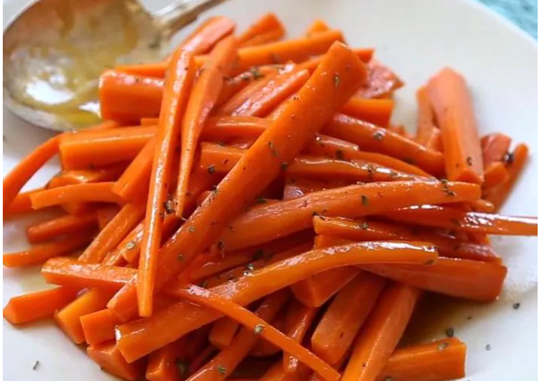

Carrot Recipes

Glazed Carrots
Glazed carrots coated in a mixture of brown sugar and butter are a versatile side dish you can serve alongside a weeknight meatloaf, a Sunday ham, or your Thanksgiving turkey. These caramelized carrots are a definite kid-pleaser but they're elegant enough to impress the adults as well!
Ingredients
- Carrots: 2 pounds carrots, peeled and cut into sticks
- Butter: ¼ cup butter
- Brown sugar: ¼ cup packed brown sugar.
- Seasonings: ¼ teaspoon salt and ⅛ teaspoon ground white pepper.
Steps
- Place carrots into a large saucepan; pour in enough water to reach depth of 1 inch and bring to a boil. Reduce heat to low, cover, and simmer carrots until tender, 8 to 10 minutes. Drain and transfer to a bowl.
- Melt butter in the same saucepan over low heat. Stir in brown sugar, salt, and white pepper until dissolved. Add carrots to the saucepan and toss until coated in the brown sugar mixture. Cook and stir until carrots are heated through and fully coated with glaze, 1 to 3 more minutes.